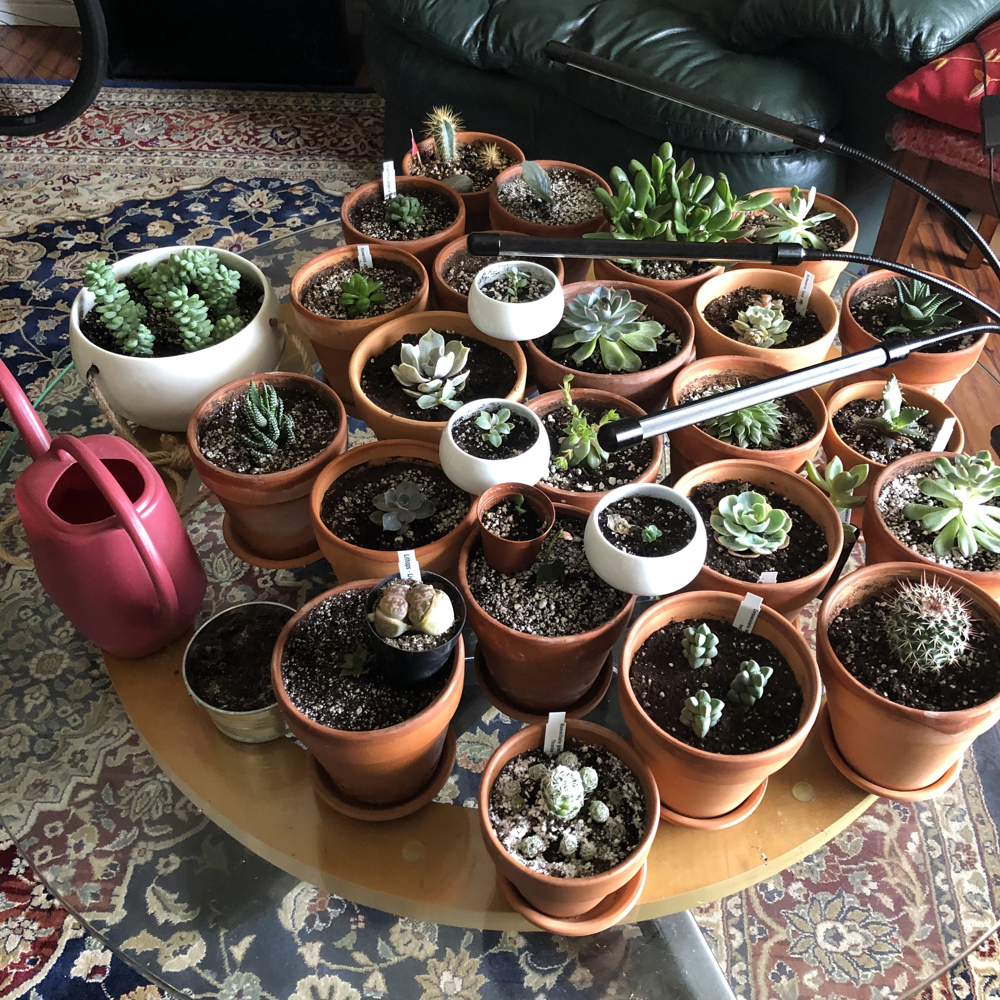
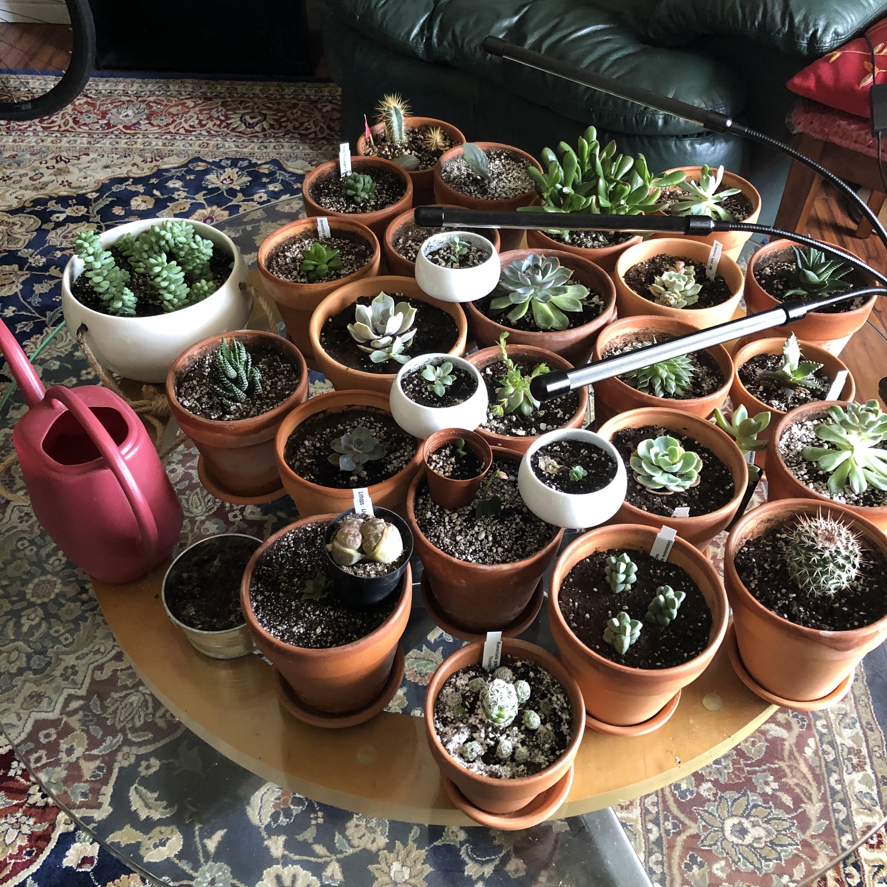

My main hobby right now in life is rock climbing. I really like to rock climb, the only downside of this hobby is that you need two people to do most of the stuff, so I have just been into bouldering and stuff like that as of right now utill COVID is over. I usually go every weekday except Thursday. Down below I posted a picture of one of the last times I was able to climb outside.
The other thing I am really into is reading. I have been getting really into reading the past couple of years. The reason why I am actually interested in learning about computer languages and computer science is actually because of some books written by this guy who is a professor of computer science at MIT. It got me really thinking that this is a career that is super beneficial for anyone to have. I have wrote on the page called "BOOKS" about all the books I have currently read in 2020, and if I recommend them or not.
I also really like to take care of plants. All my plants are succulents and cacti cause I cannot bet on myself to water them regularly. I should also note, I don't really do much to take care of them anyways, so when I say I take care of them, what I mean is that I just look at them time to time.
 
